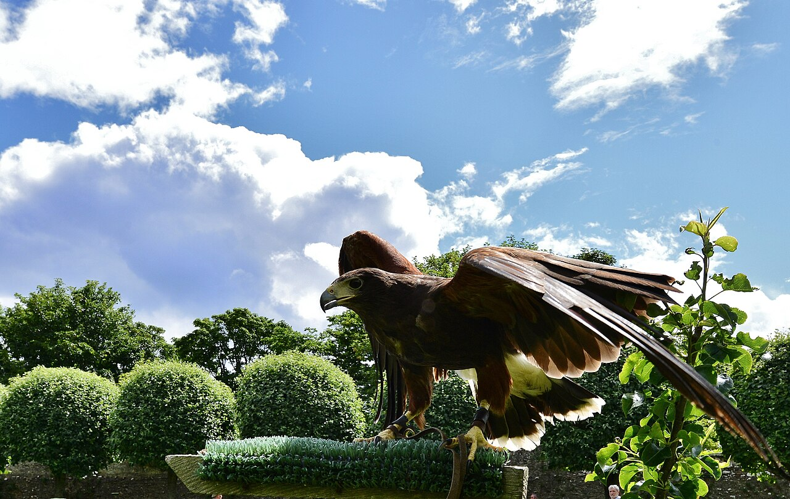

Resources → Categories
Falconry Schools & Instructors
Whether you are completely new to falconry or looking to refine advanced techniques, a qualified school or instructor can compress years of trial and error into focused, hands-on training. Below you will find everything you need to evaluate programs, understand costs, and choose the right path toward earning your falconry license.
What Falconry Schools Teach
Falconry is one of the most regulated field sports in the United States. Every state that permits falconry requires aspiring falconers to pass a written examination, secure a licensed sponsor, and build approved housing for their raptor before they can legally possess a bird of prey. A good falconry school covers all of these steps—and much more.
Core curriculum at most programs includes raptor biology and identification, understanding flight mechanics and hunting behavior, proper manning and conditioning techniques, equipment construction (jesses, anklets, leashes, and perches), weight management, and field-hawking strategies. Many schools also cover telemetry use, first aid for raptors, and the legal framework of federal and state falconry regulations.
Beyond the technical knowledge, schools provide something that books and videos cannot: real-time feedback from experienced falconers. Instructors observe your handling posture, your timing with the lure, and how you read a bird’s body language. This mentored practice accelerates skill development and helps prevent common mistakes that can injure a bird or stall its training progress.
Apprentice Program Structure
In the United States, falconry licensing follows a three-tier system established by the U.S. Fish & Wildlife Service: Apprentice, General, and Master. Each level has specific time-in-rank requirements and species restrictions.
The Apprentice level requires at least two years of practice under the direct supervision of a General or Master falconer who serves as your sponsor. During this period, an apprentice may possess one raptor—typically a red-tailed hawk or an American kestrel, depending on the state. The sponsor is legally responsible for guiding the apprentice through trapping or acquiring a bird, training it, hunting with it, and providing veterinary care.
A falconry school does not replace the apprenticeship, but it can dramatically improve your readiness. Many schools offer weekend workshops that walk you through the exam material, help you build your first equipment set, and connect you with potential sponsors in your region. Some programs maintain a network of vetted sponsors and can facilitate introductions after you complete their coursework.
After two years as an Apprentice, you may apply for a General license, which allows up to three raptors and access to a wider range of species. After five additional years at the General level, you become eligible for the Master classification, which permits up to five raptors and essentially all legally available species.
What to Expect at a Falconry Course
Falconry courses range from single-day introductory experiences to multi-week immersive programs. A typical introductory workshop lasts one to two days and includes classroom instruction in the morning followed by outdoor sessions where students handle trained birds under close supervision. You may fly a Harris’s hawk to the fist, practice lure swinging, or observe a hunting flight in the field.
More comprehensive programs span several weekends or an entire week and cover the full apprentice exam syllabus. These courses often include hands-on equipment building—you will learn to tie jesses, braid leashes, and construct a perch. Some schools provide study guides and practice exams modeled on your state’s actual test.
Expect to spend significant time outdoors regardless of weather. Falconry is a field pursuit, and reputable instructors want you comfortable in the environments where you will actually be hunting. Dress in layers, wear sturdy boots, and bring a falconry glove if you own one (most schools provide loaners).
Class sizes are typically small—four to eight students—to ensure each participant gets ample bird-handling time. Larger events may feature multiple instructors and a variety of raptor species so students can observe the differences in temperament and hunting style between, say, a red-tailed hawk and a peregrine falcon.
How to Choose the Right School
Not all falconry programs are created equal. Here are the factors that matter most when evaluating a school or instructor:
- Instructor credentials. Look for instructors who hold a General or Master falconry license with at least five years of active hunting experience. Ask how many apprentices they have mentored to completion.
- Live-bird handling. Any worthwhile program includes hands-on time with real raptors. Avoid programs that rely solely on lectures and videos.
- State-specific content. Falconry regulations vary significantly by state. A school that teaches California law will not fully prepare someone in Pennsylvania. Confirm the program covers your state’s exam material and permit process.
- Sponsor network. One of the biggest hurdles for new falconers is finding a sponsor. Schools that maintain relationships with local falconry clubs and active sponsors provide a tangible advantage.
- Reviews and alumni outcomes. Ask for references from former students. A strong program will have alumni who successfully passed their exams and are actively flying birds.
- Facility and bird welfare. Visit the school if possible. Birds should appear healthy and well-maintained, housing should meet or exceed state standards, and the overall environment should reflect a deep respect for the raptors.
Costs & State Requirements
Falconry education costs vary widely based on program length, location, and what is included. Here is a general breakdown:
- Introductory experience (2–4 hours): $150–$350. These are usually one-time sessions designed for people curious about falconry but not yet committed to pursuing a license.
- Weekend workshop (1–2 days): $300–$800. Covers exam preparation, basic equipment, and bird handling. Often includes study materials and sometimes a falconry glove.
- Comprehensive course (multi-week): $800–$2,000+. These programs are the most thorough, often spanning several weekends and including equipment building, field trips, and sponsor matching.
Beyond tuition, budget for travel and lodging if the nearest school is out of your area. Some programs offer discounts for early registration or for members of the North American Falconers Association (NAFA).
On the regulatory side, most states require you to pass a written exam (often 80% or higher to pass), submit a facilities inspection report, and secure a sponsor before you can apply for your Apprentice license. A handful of states—including Hawaii and the District of Columbia—do not permit falconry at all. Always verify your state’s current regulations with your wildlife agency before investing in a program.
Browse Falconry Schools
Find verified falconry schools and instructors in our directory.
Browse School ListingsList Your Falconry School
Reach students searching for falconry lessons. Featured listings appear first.
Add Your Business